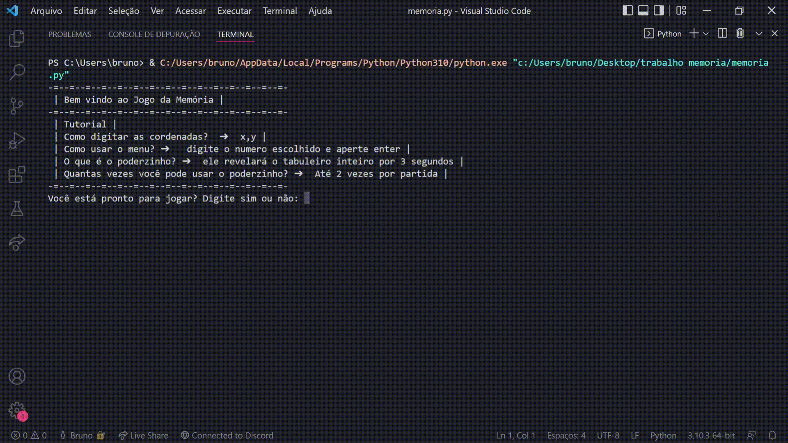

jogo da memória python
Jogo da memória feito em python como um trabalho para a matéria de Raciocínio Algoritimico. O usuário escolhe a dificuldade desejada e tem um tempo para lembrar das posições, após
isso, o jogo começa. O jogador tem acesso a um menu, que apresenta a ele as opções de sair ou usar poder (o poder permite que ele veja todas as posições por alguns segundos). O jogo só acaba quando o usuário
termina de revelar todos os espaços.
